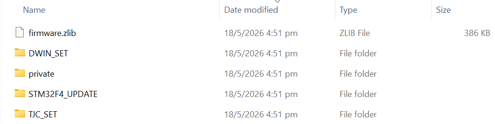
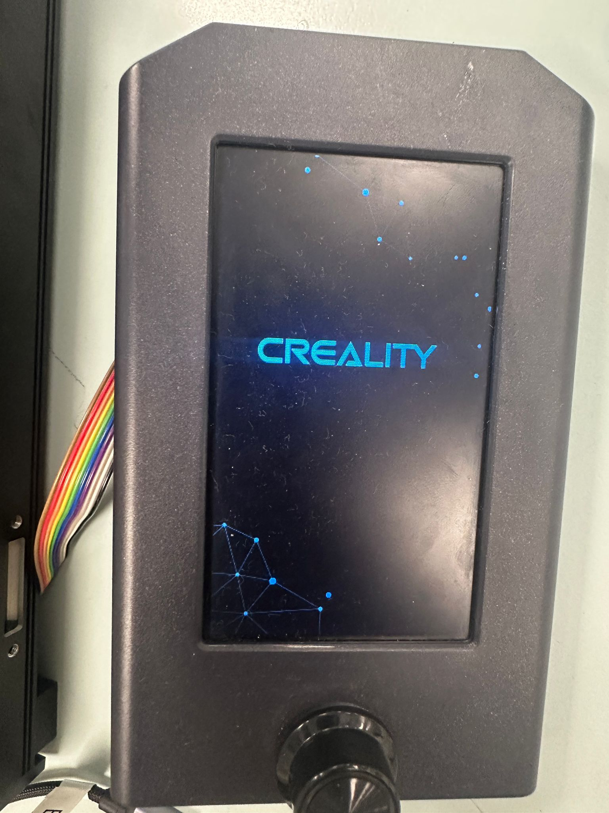
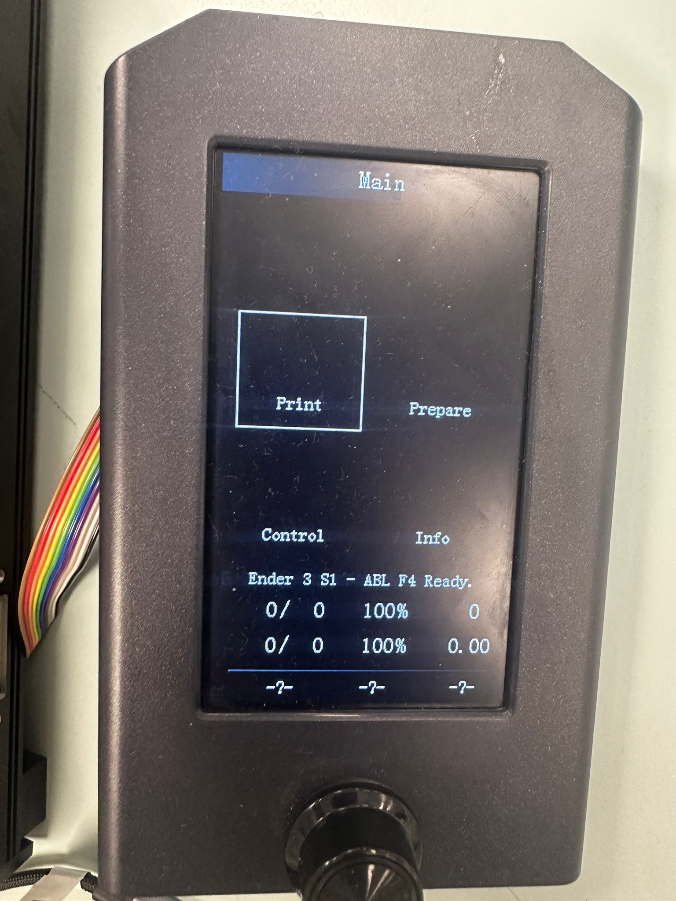
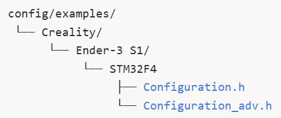
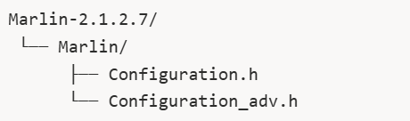
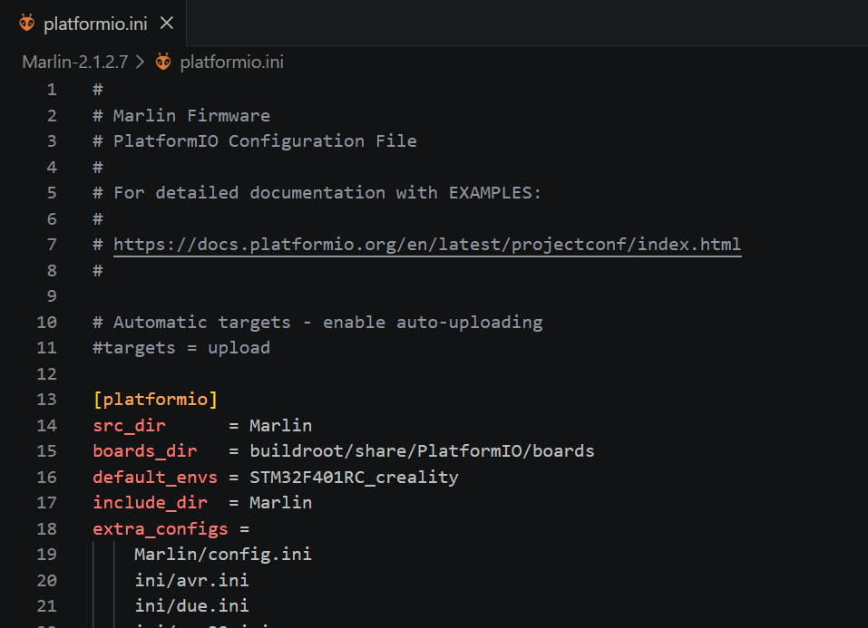

Guide to compiling your own custom Marlin Firmware
Compiling custom Marlin firmware is essential for our liquid handling system as the stock Ender 3 S1 printers are hardcoded to use the BR Touch sensor to probe the print bed to define the Z-min.
Since we have customized our printer 3D printer to perform Z-max homing due to design constraints of the customized 3D bed plates, editing the firmware's directional and endstop settings are needed.
Settings changed
- Z Homing direction
- Endstop pin assignment
- Software travel limits
- Changing Z bump when homing
- Other settings to ensure a smooth compilation of the Marlin Firmware
The firmware is a .bin file in the Firmware folder of the repository. This contains the machine-readable code that the Ender 3 S1 understands.
0. Flashing firmware on your Ender 3 S1 with STM32F4 chip
If you have not already done so, follow the instructions to download the repository.
To flash the firmware on your printer's SD card, you will need the Firmware folder of the respository.
0.1. Steps for flashing firmware
0.1.1. Formatting the SD card
- Set the file system to FAT32
- Set the allocation unit size to 4096
- 8GB SD card that came with the printer are most reliable, but anything less than 32 GB should work
0.1.2. Copy the contents of the firmware folder to your formatted SD card
- The folders/file private,
DWIN_SET,TJC_SET, andfirmware.zlibare for updating the firmware display. STM32F4_UPDATEfolder contains your custom firmware filefirmware-2ndApril2_4.bin

Figure 1. Files/Folders to copy and paste in the root folder of formatted SD card.0.1.3. Flashing your SD card
- Turn off your printer. Wait 20 seconds to power cycle your printer.
- While your printer is off, insert your SD card into the slot.
- Turn the printer on. You will see the creality loading screen briefly while the board updates.

Figure 2. Creality loading screen- Once you see the main menu, the code has successfully flashed. The main menu is for visual aid only; it is not functional.

Figure 3. Main Menu- Turn off the power again for 20 seconds, remove the SD card, and turn on to start using your 3D printer.
NOTE: DO NOT INSERT YOUR SD CARD WHEN YOUR PRINTER IS TURING ON. IT CAN CAUSE THE BOOTLOADER TO HANG. ALWAYS MAKE SURE PRINTER IS OFF BEFORE INSERTING THESD CARD.
0.2. Troubleshooting
Flashing custom firmware on an Ender 3 S1 can sometimes be tricky. Here are somes specific requirements and common issues to be aware of.
-
STM32F4_UPDATE folder: If you are only updating the mainboard and not the display of your printer you can technicaly just flash the
.bin file. However, from our experience it is much reliable to place your firmware in a folder namedSTM32F4_UPDATEbefore flashing. This is becuase the bootloader of the Ender 3 S1 with the STM32F4 chip, often only looks for the firmware in folder named exactlySTM32F4_UPDATE(the name is case sensitive). -
Firmware file naming: The bootloader can be picky about the filename. The printer will often ignore a
.bin fileif it has the exact same name as the last one it flashed. Rename your file to something simple and unique, likefirmware123.bin or f1.bin, before flashing again. -
Display screen stuck on splash screen/loading page or blank: If your display screen is stuck on the loading page or is showing a blank screen for more than 2 mins, it could mean several things:
-
Firmware flashed properly but the screen is not compatible. You can check this by conecting your printer to your computer and try operating the printer through pronterface. If you send the M119 command and see "z_max: open" it means that your firmware flashed properly.
You will have to update your screen again seprately.
-
Boatloader Hang:
- Power-cycle your printer for a 1 minute and try flashing the firmware again.
- If the above doesn't work, download the Official Creality firmware and flash it. Sometimes the bootloader needs to be "primed" by an official Creality firmware before it will accept a custom one.
-
-
Firmware not flashing:
- Ensure that your chip is
STM32F4and notSTM32F1. You can verify this by checking which chip version is written on the mainboard. - Please make sure that your SD card is formatted properly.
- Ensure that your chip is
1. Flashing firmware on any other printer
1.1. Compiling Custom Marlin
1.1.1. Prerequisites
Install the following:
-
Visual Studio Code
-
PlatformIO Extension
- Open VS Code
- Go to Extensions (Ctrl+Shift+V)
- Search for PlatformIO IDE
- Install it
1.1.2.Download Marlin Source Code
Visit and download Marlin-2.1.2.7 source code .
Extract the folder.
1.1.3. Obtain the Example Configuration Files
Many boards and printers already have tested configurations. Visit and download the configuration files.
Locate the configuration files for your printer and firmware version.

Figure 4. Location of configuration filesCopy configuration.h and configuration_adv.h from the example files into your main Marlin folder of the source code.

Figure 5. Location of configuration filesReplace the existing files.
1.1.4. Editing the code (WIP)
Most of the customization occurs in Marlin/Configuration.h and Marlin/Configuration_adv.h
- Disable the BL Touch sensor
- Define Z_Max endstop switch
- Set Z_max pos to 250
- Z_max direction
- Bump
- Other changes
Note: You might not need to make the PID control changes for your compilation. But for us, without incorporating these changes we could not successfully compile software.
1.1.5 Compiling the firmware
- Open platform.ini
- locate
default_envs = mega2560and change it to your board environment.

Figure 6. The default_envs is changed from mega250 to STM32F401RC_creality, which is the build enviornment for Ender 3 S1 STM32F4 chip.1.2. The correct SD card
Not all printers utilize the standard SD card for flashing the firmware. You might need to use a micro sd card and format it accordingly to flash your code.
For example, another printer that we modified was a Ender 3 V2 Neo for which the firmware was flashed using a micro sd card by simply placing the .bin file in the root folder.
1.3. Flashing the Firmware
Follow steps 0.1.3. Flashing you SD Card.
2. Testing for successfull Firmware upload
2.1. Check z_max z-limit using pronterface or GUI
Open up pronterface send the M119 command. Do you see the Z_MAX instead of the Z_MIN switch.
2.2. Open pronterface or GUI
Home the Z-axis. If the gantry moves upwards and stops successfully when the z-limit switch is triggered (you can either mount the z-limit switch or simply click it to test before mounting it), you have successfully flashed the firmware. :)